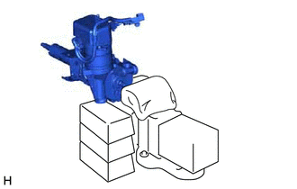

RM3140CG
_55
转向
_023995
助力系统
_0116096
动力转向 ECU（无刷型马达）
A
助力系统 动力转向 ECU（无刷型马达） 安装
程序

 1.安装带马达的动力转向 ECU 总成
1.安装带马达的动力转向 ECU 总成
- 备注：
- ·
不要掉落、用工具敲击或撞击带马达的动力转向 ECU 总成。
·如果带马达的动力转向 ECU 总成遭受撞击，则用新的更换。
·不要拉拔带马达的动力转向 ECU 总成的线束。
·不要让带马达的动力转向 ECU 总成受潮。
·不要松开程序中未涉及的螺栓。
·不要让异物污染带马达的动力转向 ECU 总成。
a.
将新的电动转向马达轴减振器安装到电动转向柱分总成上。
b.
将新的电动转向马达轴隔垫安装到电动转向柱分总成上。
c.
用 2 个螺栓将带马达的动力转向 ECU 总成和支架暂时安装到电动转向柱分总成上。
- 备注：
-
将 2 个螺栓暂时安装到带马达的动力转向 ECU 总成上时，不要将其拧到底。
d.

0.698,1.354 0.698,1.74
0.698,1.74 0.917,1.74
false
1.677,0.865 1.677,0.698
1.677,0.698 2.01,0.698
false
0.552,1.344 0.917,1.344
false
0.698,1.531 0.917,1.531
false
1.854,0.885 1.854,0.698
false
2.052,0.625 2.365,0.781
0.313,0.156
10
*a
0.375,1.271 0.688,1.427
0.313,0.156
10
*b
| *a | 布 |
| *b | 木块 |
使用铝板、布和木块将转向柱总成固定在台钳上。
- 备注：
- ·
不要过度紧固台钳，否则转向柱总成可能会变形。
·固定带马达的动力转向 ECU 总成，使其垂直向上。
·用木块或类似物体支撑转向柱总成，以确保其不掉落。
e.
0.688,0.969 1.354,0.969
true
0.417,0.896 0.875,1.094
0.458,0.198
10
SST
使用 SST 以 60 rpm 的速度向左然后向右转动（一次 180 度）转向主轴，重复 2 至 3 次以调节带马达的动力转向 ECU 总成的轴心。
- SST
- 09616-00011
f.
紧固 2 个螺栓。
- 扭矩：
- 18.5 N*m (189 kgf*cm, 14 ft.*lbf)
g.

0.594,0.958 1.354,0.958
true
0.323,0.875 0.781,1.073
0.458,0.198
10
SST
使用 SST 和扭矩扳手测量转向主轴的转矩。
- SST
- 09616-00011
- 扭矩:
- 转矩:
0.9 至 1.5 N*m（10 至 15 kgf*cm，8 至 13 in.*lbf）
- 备注：
-
确保旋转时未出现异常电阻。
如果转矩不符合规定，则重新调节带马达的动力转向 ECU 总成的轴心。
h.
连接连接器。
i.
接合线束卡夹。
j.
更换带马达的动力转向 ECU 总成时：
i.
2.365,1.396 2.615,1.396
false
2.375,3.76 2.625,3.76
false
2.656,1.313 2.969,1.469
0.313,0.156
10
*1
2.677,3.677 2.99,3.833
0.313,0.156
10
*1
0.542,0.292 0.698,0.49
0.156,0.198
10
A
0.563,2.656 0.719,2.854
0.156,0.198
10
B
| *1 | 卡夹 |
如图所示，在带马达的动力转向 ECU 总成上安装新卡夹。
- 提示：
-
可以按 A 或 B 方式安装卡夹。
2.安装带开关的转向柱上支架总成（不带智能进入和起动系统）
3.安装转向锁执行器总成（带智能进入和起动系统）